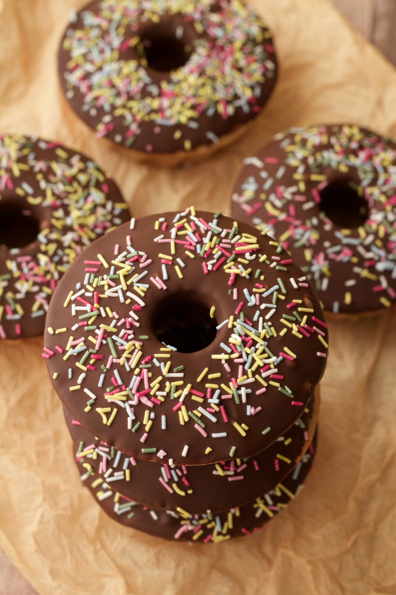

.jpg)
- Ways to Be Vegan -
As a beginner in this wonderful world of veganism, many people can get lost and would have no clue where to start with transitioning to a healthy, plant-based lifestyle. But there's not just one way to be vegan, there are a variety of different ways a person can be vegan.
Read More
- Your Vegan Pantry -
Many people often wonder what vegans eat. Some people struggle with no longer eating meat, dairy, eggs and honey from their meals as many grocery stores don't offer as many vegan products. But don't panic thinking you can no longer have junk food, there are junk food vegans but that doesn't mean they're eating the healthiest foods.
This list is to help you get started with stocking your new healthy vegan pantry. Please note this is just an example and by no means is the correct or best but it helped me get a good start on going vegan.
Read More
- Baked Donuts -
I have been craving donuts really bad lately and recently purchased a donut pan so felt it was only necessary for me to make some homemade baked donuts. Only 10 ingredients needed, these light, perfectly sweet treats are quick and easy to make! Try out the recipe here and let me know what you think.
- Herbs To Grow In Your Kitchen Garden -
Grow these must have herbs to get your taste buds "oooh" and "aaah" at.
Rosemary
The aroma of rosemary is another natural deterrent for a number of garden pest including mosquitos and other flying insects. It's also easy to grow from clippings.